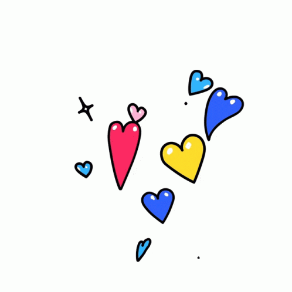

¿Qué puedes encontrar en esta web? Descubre al grupo de pop coreano Stray Kids
Aquí puedes encontrar información sobre el grupo de pop coreano Stray Kids y explorar su música, biografías de los miembros, historias detrás de las canciones y más.
You make Stray Kids stayCon este lema al final de muchos vídeos, Stray Kids refleja la conexión entre el grupo y sus fans, conocidos como STAYs.
